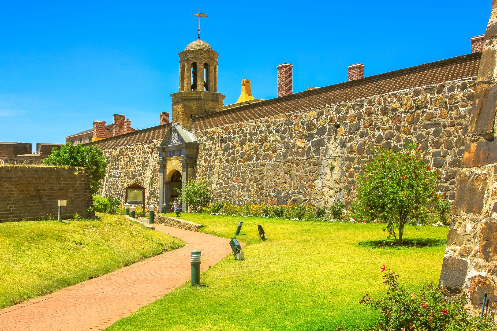
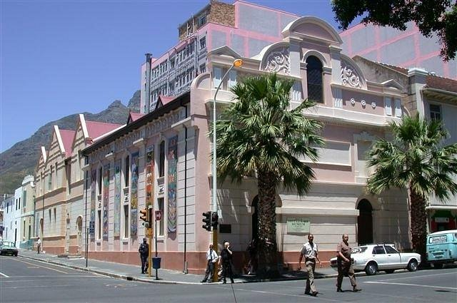

Which city?

Sweden (Stockholm) is a national holiday, with everyone decamping to the country to gather with friends and family for a rousing few days of food, games, dancing, singing… and plenty of drinking. There’s also the gathering of seven flowers to place under your pillow (when you wake up you should have dreamt of who you will marry), flower crowns, and the raising of the Maypole (before dancing around it).
Foreign Language
| English | Swedish |
|---|---|
| Hey my name is Sapho | Hej, jag heter Sapho |
| I am an Agile Developer at Codex | Jag är en Agil Utvecklare på Codex |
| I aspire to become a good developer | Jag strävar efter att bli en bra utvecklare |
Historical Places
Castle of Good Hope
Built by the DEIC between 1666 and 1679, the Castle of Good Hope is the oldest existing colonial building in South Africa.
It replaced an older fort called the Fort de Goede Hoop which was constructed from clay and timber and built by Jan van Riebeeck,
the first Commander of the Cape.
Parliament
Queen Victoria granted permission for the establishment of a parliament in the Cape Colony in 1853.
The first sittings were held in the Governor's residence,
the Tuynhuys, after which sittings were held in the Goede Hoop Masonic Lodge.
District Six Museum
The Museum existed as a peripatetic movement between 1989 and 1994, building support for the work of memory through creating collecting points and storytelling opportunities in different parts of the city.